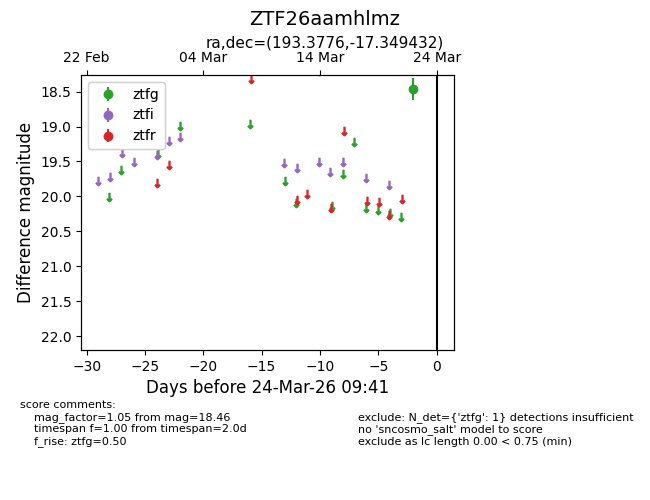
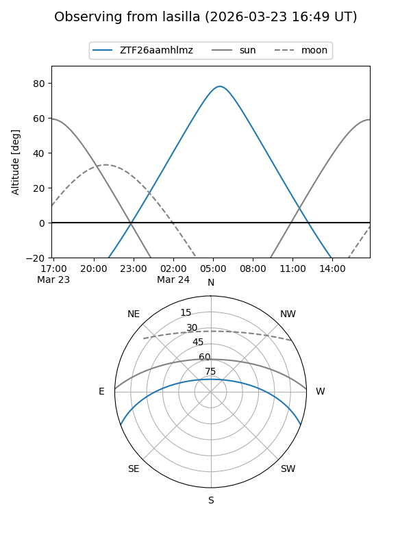
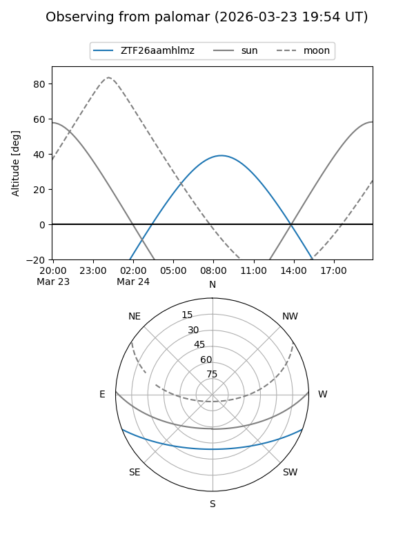

ZTF26aamhlmz
Target ZTF26aamhlmz at 2026-03-24 09:43
Aliases and brokers:
FINK: link
Lasair: link
ALeRCE: link
alt names
ZTF26aamhlmz (ztf,fink_ztf)
Coordinates:
equatorial (ra, dec) = 193.3776,-17.34943
equatorial (HMS+DMS) = 12:53:30.62,-17:20:57.95
galactic (l, b) = (303.6377,+45.51948)
Flags:
Photometry:
last ztfg=18.46
1 ztfg detections
Lightcurve

Visibility


Additional plots